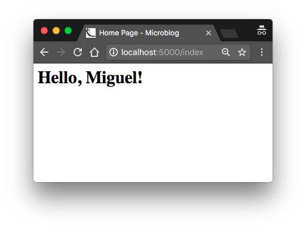

本文翻译自 The Flask Mega-Tutorial Part II: Templates
在Flask Mega-Tutorial系列的第二部分中，我将讨论如何使用模板。
学习完第一章之后，你已经拥有了一个虽然简单，但是可以成功运行Web应用，它的文件结构如下：
1 | microblog\ |
在终端会话中设置环境变量FLASK_APP=microblog.py，然后执行flask run命令来运行应用。 包含这个应用的Web服务启动之后，你可以通过在Web浏览器的地址栏中键入URL http://localhost:5000/ 来验证。
本章将沿用这个应用，在此之上，你将学习如何生成包含复杂结构和诸多动态组件的网页。如果对这个应用和相关开发流程有所遗忘，请回顾第一章。
本章的GitHub链接为：Browse, Zip, Diff.
什么是模板？
我设计的微博应用程序的主页会有一个欢迎用户的标题。虽然目前的应用程序还没有实现用户概念，但这不妨碍我使用一个Python字典来模拟一个用户，如下所示：
1 | user = {'username': 'Miguel'} |
创建模拟对象是一项实用的技术，它可以让你专注于应用程序的一部分，而无需为系统中尚不存在的其他部分分心。 在设计应用程序主页的时候，我可不希望因为没有一个用户系统来分散我的注意力，因此我使用了模拟用户对象，来继续接下来的工作。
原先的视图函数返回简单的字符串，我现在要将其扩展为包含完整HTML页面元素的字符串，如下所示：
1 | from app import app |
对HTML标记语言不熟悉的话，建议阅读一下Wikipedia上的简介HTML Markup
利用上述的代码更新这个视图函数，然后再次在浏览器打开它的URL看看结果。

如果我说这个函数返回HTML的方式并不友好的话，你可能会觉得诧异。设想一下，当这个视图函数中的用户和博客不断变化时，里面的代码将会变得多么的复杂。应用的视图函数及其关联的URL也会持续增长。如果哪天我决定更改这个应用的布局，那就不得不更新每个视图函数的HTML字符串。显然，随着应用的扩张，这种方式完全不可行。
将应用程序的后台逻辑和网页布局划分开来，你不觉得更容易组织管理吗？甚至你可以聘请一位Web设计师来设计一个杀手级的网站前端，而你只需要用Python编写后台应用逻辑。
模板有助于实现页面展现和业务逻辑之间的分离。 在Flask中，模板被编写为单独的文件，存储在应用程序包内的templates文件夹中。 在确定你在microblog目录后，创建一个存储模板的目录：
1 | (venv) $ mkdir app/templates |
在下面可以看到你的第一个模板，它的功能与上面的index()视图函数返回的HTML页面相似。 把这个文件写在app/templates/index.html中：
1 | <html> |
这个HTML页面看起来非常简单，唯一值得关注的地方是{{ ... }}。{{ ... }}包含的内容是动态的，只有在运行时才知道具体表示成什么样子。
网页渲染转移到HTML模板之后，视图函数就能被简化：
1 | from flask import render_template |
看起来好多了吧？ 赶紧试试这个新版本的应用程序，看看模板是如何工作的。 在浏览器中加载页面后，你需要从浏览器查看HTML源代码并将其与原始模板进行比较。
将模板转换为完整的HTML页面的操作称为渲染。 为了渲染模板，需要从Flask框架中导入一个名为render_template()的函数。 该函数需要传入模板文件名和模板参数的变量列表，并返回模板中所有占位符都用实际变量值替换后的字符串结果。
render_template()函数调用Flask框架原生依赖的Jinja2模板引擎。 Jinja2用render_template()函数传入的参数中的相应值替换{{ ... }}块。
条件语句
在渲染过程中使用实际值替换占位符，只是Jinja2在模板文件中支持的诸多强大操作之一。 模板也支持在{% ... ％}块内使用控制语句。 index.html模板的下一个版本添加了一个条件语句：
1 | <html> |
现在，模板变得聪明点儿了，如果视图函数忘记给渲染函数传入一个名为title的关键字参数，那么模板将显示一个默认的标题，而不是显示一个空的标题。 你可以通过在视图函数的render_template()调用中去除title参数来试试这个条件语句是如何生效的。
循环
登录后的用户可能想要在主页上查看其他用户的最新动态，针对这个需求，我现在要做的是丰富这个应用来满足它。
我将会故技重施，使用模拟对象的把戏来创建一些模拟用户和动态：
1 | from flask import render_template |
我使用了一个列表来表示用户动态，其中每个元素是一个具有author和body字段的字典。 未来设计用户和其动态时，我将尽可能地保留这些字段名称，以便在使用真实用户和其动态的时候不会出现问题。
在模板方面，我必须解决一个新问题。 用户动态列表拥有的元素数量由视图函数决定。 那么模板不能对有多少个用户动态进行任何假设，因此需要准备好以通用方式渲染任意数量的用户动态。
Jinja2提供了for控制结构来应对这类问题：
1 | <html> |
大道至简，对吧？ 玩玩这个新版本的应用程序，一定要逐步添加更多的内容到用户动态列表，看看模板如何调度以展现视图函数传入的所有用户动态。

模板的继承
绝大多数Web应用程序在页面的顶部都有一个导航栏，其中带有一些常用的链接，例如编辑配置文件，登录，注销等。我可以轻松地用HTML标记语言将导航栏添加到index.html模板上，但随着应用程序的增长，我将需要在其他页面重复同样的工作。尽量不要编写重复的代码，这是一个良好的编程习惯，毕竟我真的不想在诸多HTML模板上保留同样的代码。
Jinja2有一个模板继承特性，专门解决这个问题。从本质上来讲，就是将所有模板中相同的部分转移到一个基础模板中，然后再从它继承过来。
所以我现在要做的是定义一个名为base.html的基本模板，其中包含一个简单的导航栏，以及我之前实现的标题逻辑。 您需要在模板文件app/templates/base.html中编写代码如下：
1 | <html> |
在这个模板中，我使用block控制语句来定义派生模板可以插入代码的位置。 block被赋予一个唯一的名称，派生的模板可以在提供其内容时进行引用。
通过从基础模板base.html继承HTML元素，我现在可以简化模板index.html了：
1 | {% extends "base.html" %} |
自从基础模板base.html接手页面的布局之后，我就可以从index.html中删除所有这方面的元素，只留下内容部分。 extends语句用来建立了两个模板之间的继承关系，这样Jinja2才知道当要求呈现index.html时，需要将其嵌入到base.html中。 而两个模板中匹配的block语句和其名称content，让Jinja2知道如何将这两个模板合并成在一起。 现在，扩展应用程序的页面就变得极其方便了，我可以创建从同一个基础模板base.html继承的派生模板，这就是我让应用程序的所有页面拥有统一外观布局而不用重复编写代码的秘诀。